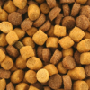
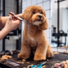
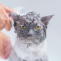

Esses são apenas alguns dos produtos disponíveis no Petshop "Melhor Amigo". Temos um catálogo completo e diversificado, cuidadosamente selecionado para atender às necessidades dos animais de estimação. Nossa equipe terá prazer em orientá-lo e ajudá-lo a escolher os melhores produtos para o seu amiguinho de quatro patas!
Rações:

No Petshop "Melhor Amigo", oferecemos uma seleção de rações premium para cães e gatos. Essas rações são formuladas com ingredientes de alta qualidade, garantindo uma nutrição balanceada e adequada para o seu pet. Temos opções para diferentes idades, raças e necessidades específicas, proporcionando uma dieta saudável e saborosa para o seu melhor amigo.
Tosa especializada:

Proporcionamos serviços profissionais de tosa para cães de todas as raças. Nossos tosadores experientes e qualificados utilizam técnicas avançadas para garantir que seu pet tenha um visual impecável. Além de cortes de pelos personalizados, também realizamos higienização e cuidados especiais, como limpeza de ouvidos e corte de unhas, deixando seu cãozinho limpo e bem cuidado.
Banho relaxante:

No Petshop "Melhor Amigo", oferecemos banhos relaxantes para cães e gatos. Utilizamos produtos de qualidade, seguros e adequados para cada tipo de pelagem, garantindo uma limpeza profunda e refrescante. Nossos profissionais carinhosos proporcionam um ambiente tranquilo e seguro para que seu pet desfrute de um banho agradável, deixando-o com uma pelagem macia, brilhante e cheirosa.
Briquedos interativos:
Valorizamos o enriquecimento e a diversão dos animais, por isso oferecemos uma variedade de brinquedos interativos. Esses brinquedos estimulam a mente e o corpo do seu pet, promovendo o exercício físico e mental. Desde brinquedos de mastigação duráveis atéjogos interativos, temos opções para cães e gatos de todos os tamanhos e idades, garantindo horas de entretenimento e diversão saudável.
Produtos de higiene e cuidado:
Na nossa seleção de produtos, você encontrará uma gama de itens de higiene e cuidados para o seu pet. Isso inclui shampoos e condicionadores específicos para diferentes tipos de pelagem, escovas e pentes para manter os pelos desembaraçados e saudáveis, produtos de limpeza auricular e ocular, além de acessórios essenciais como coleiras, guias e comedouros. Tudo o que você precisa para manter seu animalzinho limpo, confortável e bem cuidado.
.png)